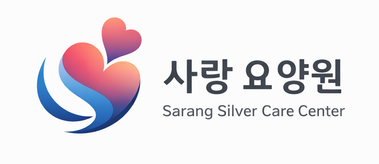

가족 같은 분위기로 함께 축하합니다
사랑요양원은 어르신의 생신을 함께 축하하며 가족 같은 따뜻한 분위기를 만들어갑니다.
생신잔치는 어르신께 즐거운 추억을 선물하고, 함께 생활하는 분들과 마음을 나누는 소중한 시간입니다.
행사와 프로그램
- 월별 생신잔치
- 노래와 축하 시간
- 어르신 간 교류와 정서 지원
- 보호자분께 전하는 요양원 일상 공유
어르신 얼굴이 포함된 사진은 보호자 동의 여부를 확인한 뒤 공개합니다.

생신을 맞으신 어르신들과 함께 축하와 웃음이 가득한 시간을 보냈습니다.
사랑요양원은 어르신의 생신을 함께 축하하며 가족 같은 따뜻한 분위기를 만들어갑니다.
생신잔치는 어르신께 즐거운 추억을 선물하고, 함께 생활하는 분들과 마음을 나누는 소중한 시간입니다.